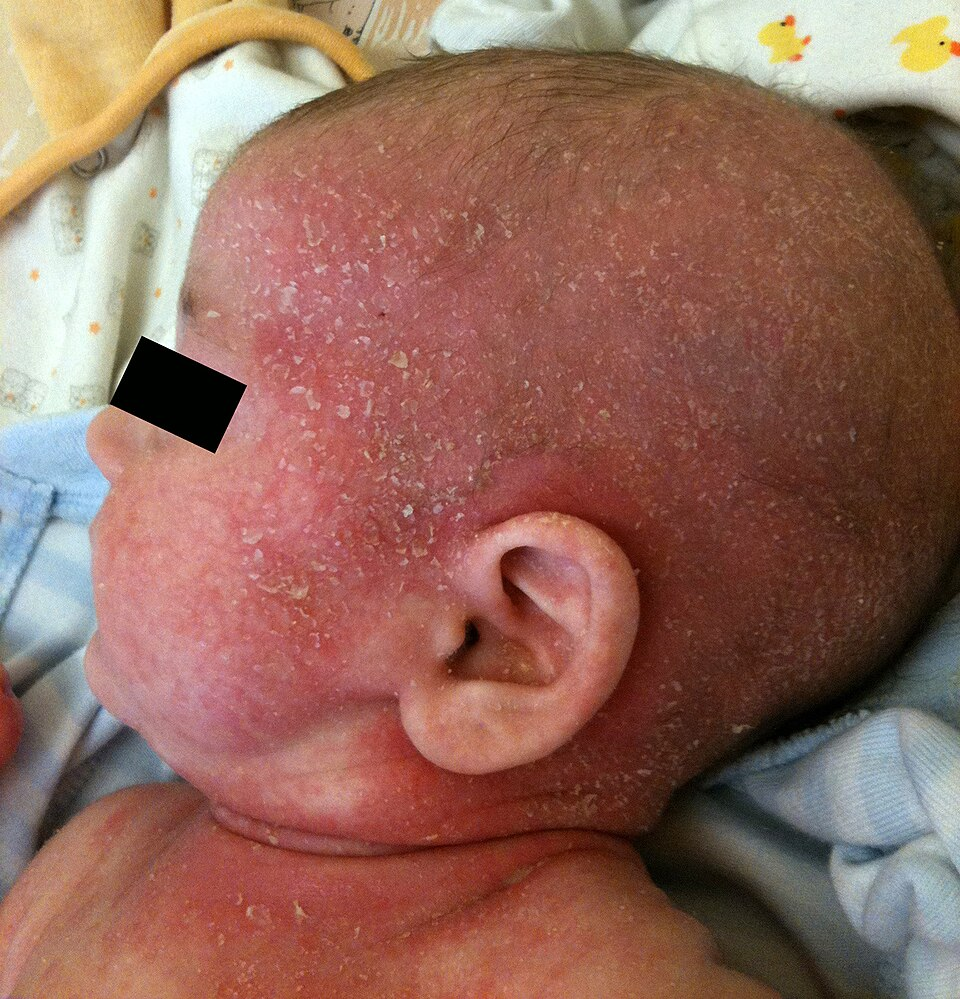
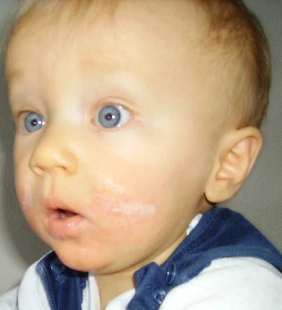
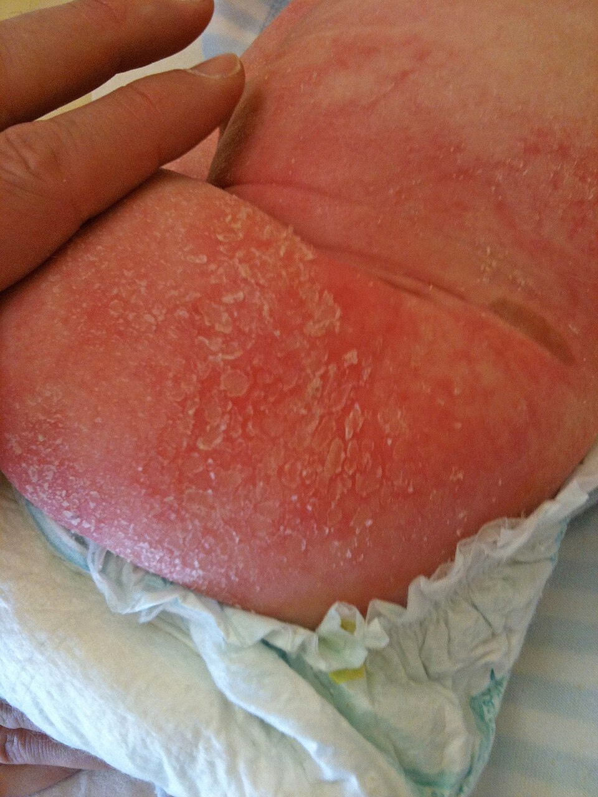
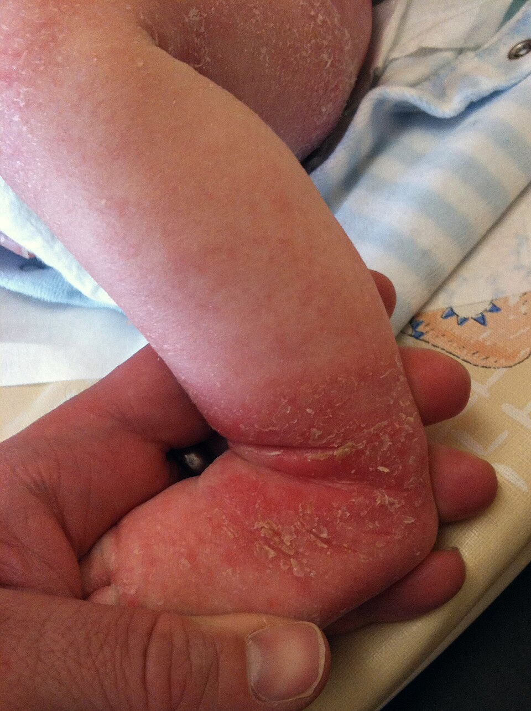
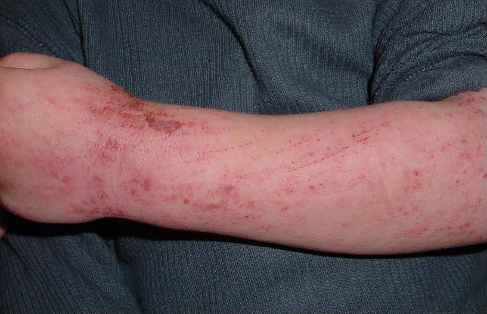
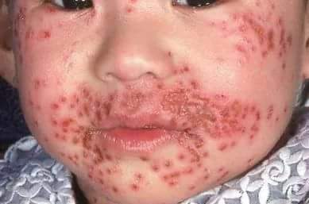
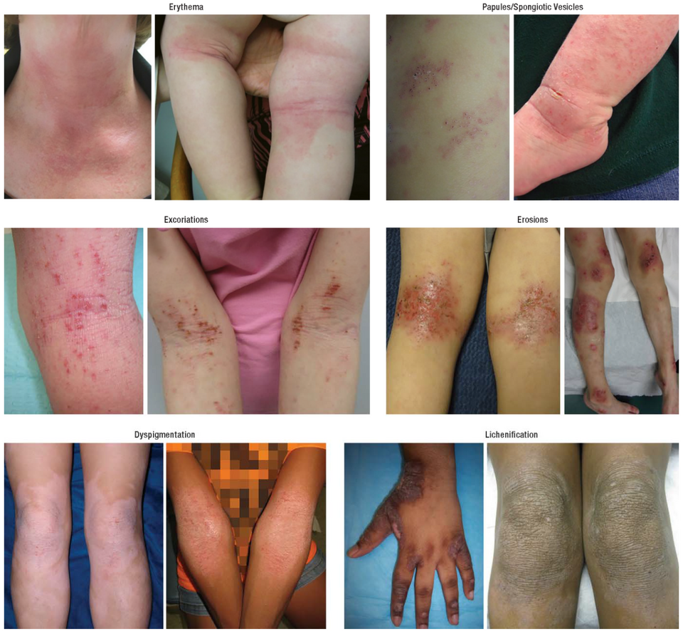

衛教目錄 › 皮膚 › 異位性皮膚炎
異位性皮膚炎（濕疹）
皮膚乾、癢、反覆發紅脫屑，是孩子最常見的慢性皮膚病。它不會傳染，也不是不乾淨，而是皮膚的「保護牆」比較脆弱。只要每天保濕、發作時正確擦藥，大多數孩子都能控制得很好。
1–2 成的孩子有異位性皮膚炎，多數在 5 歲前開始
每天 2 次全身保濕，是最重要的基礎治療
多數改善隨著長大，很多孩子的症狀會明顯減輕
1為什麼會發生？
健康的皮膚像一道磚牆：皮膚細胞是「磚」，細胞之間的油脂是「水泥」，可以鎖住水分、擋住外來刺激。異位性皮膚炎的孩子天生水泥比較少，水分容易流失、刺激物和過敏原容易鑽進去，引起發炎和癢；越抓，牆就破得越厲害。
體質：常有家族史，爸媽或兄弟姊妹有濕疹、過敏性鼻炎或氣喘。
常見誘發因素：乾燥天氣、流汗悶熱、羊毛或粗糙衣物、肥皂與沐浴乳、感冒、壓力。
不是食物造成的：大多數孩子不是吃錯東西引起的（見食物過敏的迷思）。
過敏進行曲：部分孩子之後會出現食物過敏、過敏性鼻炎或氣喘。
2不同年齡的樣子
| 年齡 | 常見位置與表現 |
|---|---|
| 嬰兒（2 個月–2 歲） | 臉頰、頭皮、四肢外側、軀幹；紅、粗糙、可能滲液結痂。尿布區通常比較少。 |
| 幼兒到學齡 | 手肘內側、膝蓋後方、手腕、腳踝、脖子；乾燥脫屑，久抓會變厚、紋路變深。 |
| 青少年 | 彎曲處、臉、脖子、手；皮膚增厚（苔蘚化）較明顯。 |

Gzzz／Wikimedia Commons／CC BY-SA 4.0，已縮小

jaro.p／Wikimedia Commons／CC BY-SA 3.0

Gzzz／Wikimedia Commons／CC BY-SA 4.0，已縮小

Gzzz／Wikimedia Commons／CC BY-SA 4.0，已縮小

Eisfelder／Wikimedia Commons／CC BY-SA 3.0
3保濕：最重要的一步
- 每天至少 2 次、全身擦，就算皮膚看起來很好也要擦；發作時可以擦更多次。
- 洗完澡 3 分鐘內，皮膚還微濕時馬上擦，鎖水效果最好。
- 擦「多」一點：擦完皮膚會亮亮、有一層。小孩一週常需要 150–250 克，大孩子更多。
- 選擇：乳霜或軟膏比乳液保濕；選無香料、無色素、成分單純的產品，不一定要昂貴。
- 順著毛髮方向輕輕抹開，不要用力來回搓。
- 和藥膏一起用時：先擦藥膏在發炎處，等幾分鐘再全身擦保濕；或依醫師指示順序。
- 新產品先在小範圍試用 1–2 天；擦了會刺痛、更紅時就換一種。
4洗澡怎麼洗
- 每天洗、時間短：溫水（不燙），5–10 分鐘。
- 少用清潔用品：只在髒的地方（腋下、屁股、手腳）用溫和、弱酸性或無皂的潔膚產品；不要用肥皂、不用沐浴球搓。
- 輕拍擦乾，不要用毛巾用力搓，接著馬上擦保濕。
- 稀釋漂白水浴：反覆感染或中重度的孩子，醫師可能建議每週 2–3 次（家用漂白水約每 10 公升溫水加 8 mL，泡 5–10 分鐘後沖淨）[1]。請依醫師指示，不要自行調高濃度。
5類固醇藥膏怎麼擦
很多家長擔心類固醇，但依醫師指示擦對的強度、對的量、對的天數，是安全又有效的。擦太少、太早停，反而讓濕疹反覆發作、更難控制 [1]。
- 擦在發炎、紅、癢的地方，薄薄一層均勻覆蓋，不需要用力搓到看不見。
- 每天 1–2 次，連續擦到皮膚摸起來平滑、不紅不癢（通常 1–2 週）。
- 臉、脖子、皮膚皺褶處用比較弱的藥；手腳、厚的皮膚用比較強的藥——醫師會依位置開不同藥膏。
- 好了以後的「預防性塗抹」：常反覆發作的地方，好轉後每週 2 天繼續擦，可以減少復發 [1]。
- 不要自己換成更強的藥，也不要突然停藥；兩週沒改善請回診。
- 非類固醇藥膏（如 tacrolimus、pimecrolimus 等）：適合臉、眼周、長期維持使用；剛開始擦可能有短暫灼熱感，幾天後會改善。
6要擦多少：指尖單位
| 年齡 | 臉＋脖子 | 單手臂＋手 | 單腿＋腳 | 前胸腹 | 背＋屁股 |
|---|---|---|---|---|---|
| 3–6 個月 | 1 | 1 | 1.5 | 1 | 1.5 |
| 1–2 歲 | 1.5 | 1.5 | 2 | 2 | 3 |
| 3–5 歲 | 1.5 | 2 | 3 | 3 | 3.5 |
| 6–10 歲 | 2 | 2.5 | 4.5 | 3.5 | 5 |
表內數字為指尖單位數，整個部位都有疹子時的用量 [6]；只有一小塊就按比例減少。
7止癢與生活照顧
- 指甲剪短磨平，睡覺時可戴棉質手套。
- 想抓時：改用輕拍、冰敷或擦保濕；轉移注意力。
- 衣物：穿純棉、寬鬆、透氣的衣服；新衣服先洗過；避免羊毛直接接觸皮膚。
- 環境：室內不要太熱太乾，流汗後擦乾或沖澡；游泳後沖淨並擦保濕。
- 口服抗組織胺不能治療濕疹的發炎，只有在晚上癢到睡不好時，醫師可能短期開立有助眠效果的藥 [1]。
- 濕敷療法：嚴重發作時，擦完藥和保濕後包一層濕的紗布或衣服、外層再一層乾的，可快速止癢（請依醫師指導）。
8食物過敏的迷思
大多數異位性皮膚炎不是吃錯東西造成的，不建議沒有確診食物過敏就自行忌口——長期忌口可能造成營養不良，甚至增加日後真的對該食物過敏的機會 [1]。
如果吃了某種食物後幾分鐘到 2 小時內出現蕁麻疹、嘴唇腫、嘔吐、喘，才需要請醫師評估食物過敏。嚴重濕疹的嬰兒，可和醫師討論及早、安全地引入花生、蛋等食物 [7]。
如果吃了某種食物後幾分鐘到 2 小時內出現蕁麻疹、嘴唇腫、嘔吐、喘，才需要請醫師評估食物過敏。嚴重濕疹的嬰兒，可和醫師討論及早、安全地引入花生、蛋等食物 [7]。
9何時要回診？
出現以下情況，請盡快就醫
- 濕疹突然變嚴重，出現一群群小水泡、凹陷的圓形小破洞，合併發燒、精神差（可能是疱疹病毒感染）
- 黃色結痂、流膿、紅腫熱痛快速擴大（可能是細菌感染）
- 全身大範圍發紅、脫皮、發燒

Mohammad2018／Wikimedia Commons／CC BY-SA 4.0
這些情況請安排門診
- 規則保濕加擦藥 1–2 週仍沒有改善
- 癢到晚上睡不好、影響上學或情緒
- 藥膏快用完、需要長期維持治療的計畫
近五年實證重點（2026/11 整理）
- 2023 AAAAI/ACAAI 指引（25 項建議）[1]：
- 建議：保濕劑；外用類固醇與外用 calcineurin 抑制劑；穩定後以 TCS 每週 1–2 次或 TCI 每週 2–3 次的預防性維持治療，優於只在發作時治療；中重度考慮稀釋漂白水浴、濕敷。
- 不建議：常規飲食排除、全身性類固醇、無感染時使用外用抗生素、口服抗組織胺作為治療。
- Dupilumab 用於 6 個月–未滿 6 歲（Lancet 2022）：第 16 週 IGA 0/1 達成率 28% vs 4%，EASI-75 53% vs 11% [3]。
- 新型外用非類固醇藥：tapinarof、ruxolitinib、roflumilast 乳膏陸續在國外取得兒童適應症（年齡下限各異），國內上市與給付情形請查詢 [1]。
- 嬰兒期每日保濕預防濕疹（BEEP，Lancet 2020）：一般風險嬰兒每日保濕未能預防濕疹，且皮膚感染略增 [5]。
診斷與嚴重度
- 臨床診斷：搔癢＋典型型態與分布（嬰兒臉頰與伸側、兒童屈側）＋慢性反覆病程；常合併個人或家族異位性病史、皮膚乾燥。
- 鑑別：脂漏性皮膚炎、疥瘡、接觸性皮膚炎、乾癬、白色糠疹、皮膚黴菌；嬰兒期嚴重且合併生長遲滯或反覆感染時，考慮免疫缺陷（如 Wiskott-Aldrich、高 IgE 症候群）[4]。
- 不需常規：總 IgE、食物特異性 IgE 或皮膚點刺測試，除非有明確立即型過敏史 [1]。
- 嚴重度工具：EASI、SCORAD、POEM（家長回報）可用於追蹤治療反應。

Siegfried EC, Hebert AA. J Clin Med 2015／Wikimedia Commons／CC BY 4.0
外用藥物
| 類別 | 常見藥物 | 使用重點 |
|---|---|---|
| 外用類固醇（TCS） | ||
| 弱效 | Hydrocortisone 1% | 嬰兒臉部、皺褶處、輕微病灶。 |
| 低至中效 | Desonide 0.05%、hydrocortisone butyrate 0.1% | 臉、頸部短期使用。 |
| 中效 | Mometasone furoate 0.1%、betamethasone valerate 0.1%、triamcinolone 0.1%、fluticasone 0.05% | 軀幹、四肢；兒童多數發作的主力，每天 1 次即可 [1]。 |
| 強效以上 | Betamethasone dipropionate、clobetasol propionate | 手掌腳底、苔蘚化；兒童短期、局部使用，避免臉與皺褶處。 |
| 外用 calcineurin 抑制劑（TCI） | ||
| Tacrolimus 0.03%／0.1% | 0.03%：≥ 2 歲；0.1%：≥ 16 歲（依仿單） | 臉、眼周、皺褶處與長期維持；不會造成皮膚萎縮。初期灼熱感常見。美國加框警語之惡性腫瘤風險，長期研究未見增加 [1]。 |
| Pimecrolimus 1% | ≥ 2 歲（依仿單；國外研究支持 3 個月以上使用） | 輕中度，臉部適用。 |
| 其他外用非類固醇 | ||
| Crisaborole 2%（PDE4 抑制劑） | ≥ 3 個月（國外仿單） | 輕中度；指引建議可使用 [1]。 |
| Ruxolitinib、tapinarof、roflumilast 乳膏 | 國外核准兒童年齡不一 | 國內可近性有限，供參考。 |
預防性維持：穩定後在常復發處 TCS 每週 1–2 次（如週末）或 TCI 每週 2–3 次 [1]。用量參考指尖單位表（見家長衛教）[6]。
輔助治療
| 處置 | 2023 JTF 指引 [1] |
|---|---|
| 保濕劑 | 建議 所有嚴重度 |
| 稀釋漂白水浴 | 建議 中重度（約 0.005% 次氯酸鈉） |
| 濕敷療法 | 可考慮 中重度急性發作 |
| 外用抗生素（無感染） | 不建議 |
| 口服抗組織胺 | 不建議 作為濕疹治療；鎮靜型可短期助眠 |
| 飲食排除 | 不建議 未確診食物過敏時 |
| 全身性類固醇 | 不建議（停藥反彈） |
| 益生菌、維生素 D、魚油 | 證據不足，不常規建議 |
中重度：光照與全身治療
- 轉介時機：最佳化外用治療（含遵從性與用量）後仍控制不佳、需長期強效 TCS、影響睡眠與生活品質。
- Dupilumab（IL-4Rα 單株抗體）：國外核准 ≥ 6 個月；6 個月–5 歲 RCT 顯示明顯改善，結膜炎為常見副作用 [3]。台灣健保給付有嚴重度與年齡條件。
- 其他生物製劑：tralokinumab、lebrikizumab（青少年）。
- 口服 JAK 抑制劑：upadacitinib、abrocitinib（≥ 12 歲），需監測感染、血球、血脂。
- 傳統免疫抑制劑：cyclosporine、methotrexate、azathioprine；窄頻 UVB 用於較大兒童。
合併感染
| 感染 | 表現 | 處置 |
|---|---|---|
| 金黃色葡萄球菌 | 蜂蜜色結痂、膿疱、滲液 | 局部：mupirocin 短期；廣泛：口服 cephalexin；依培養考慮 MRSA。 |
| 疱疹性濕疹（Kaposi varicelliform eruption） | 單一型態群聚小水泡、打孔樣糜爛，常伴發燒 | 急症：儘速口服或靜脈 acyclovir；眼周病灶會診眼科。 |
| 傳染性軟疣 | 臍凹狀小丘疹，可引發周圍濕疹 | 多可自癒；控制周圍皮膚炎。 |
參考資料
- AAAAI/ACAAI JTF Atopic Dermatitis Guideline Panel; Chu DK, Schneider L, Asiniwasis RN, et al. Atopic dermatitis (eczema) guidelines: 2023 AAAAI/ACAAI Joint Task Force on Practice Parameters GRADE– and Institute of Medicine–based recommendations. Ann Allergy Asthma Immunol. 2024;132(3):274–312. doi:10.1016/j.anai.2023.11.009 AAAAI/ACAAI 指引
- Davis DMR, Drucker AM, Alikhan A, et al. Guidelines of care for the management of atopic dermatitis in adults with phototherapy and systemic therapies. J Am Acad Dermatol. 2024;90(2):342–345（執行摘要）；2025 年焦點更新. AAD 指引
- Paller AS, Simpson EL, Siegfried EC, et al. Dupilumab in children aged 6 months to younger than 6 years with uncontrolled atopic dermatitis: a randomised, double-blind, placebo-controlled, phase 3 trial. Lancet. 2022;400(10356):908–919. doi:10.1016/S0140-6736(22)01539-2 RCT
- Siegfried EC, Hebert AA. Diagnosis of atopic dermatitis: mimics, overlaps, and complications. J Clin Med. 2015;4(5):884–917. doi:10.3390/jcm4050884 回顧（圖片來源）
- Chalmers JR, Haines RH, Bradshaw LE, et al. Daily emollient during infancy for prevention of eczema: the BEEP randomised controlled trial. Lancet. 2020;395(10228):962–972. RCT
- Long CC, Mills CM, Finlay AY. A practical guide to topical therapy in children. Br J Dermatol. 1998;138(2):293–296. 指尖單位來源
- Togias A, Cooper SF, Acebal ML, et al. Addendum guidelines for the prevention of peanut allergy in the United States. J Allergy Clin Immunol. 2017;139(1):29–44. NIAID 指引
文獻搜尋截至 2026 年 11 月。指尖單位與花生引入指引超過五年，但仍為臨床常用依據。
本頁內容整理於 2026 年 11 月，供門診衛教與醫療人員參考，不能取代個別的診察與判斷。藥物使用請依醫師指示與藥品仿單。